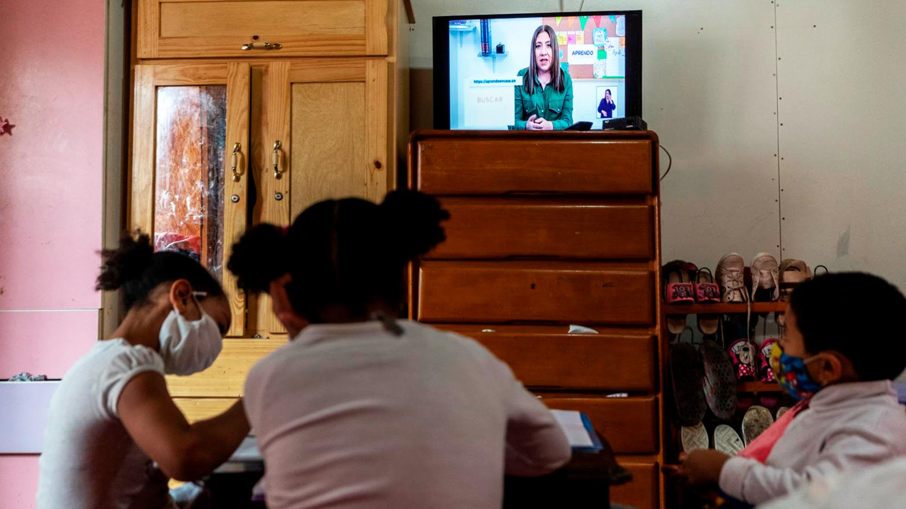

Los niños y jóvenes se encuentran entre los más afectados por la pandemia porque su educación será diferente y tendrán diferentes niveles de aprendizaje en comparación con los grupos anteriores. Dejaron de socializar, dejaron de ir a la escuela, dejaron de desarrollar algunos aprendizajes y habilidades. Para comprender mejor las graves consecuencias de la pandemia en los sistemas educativos de todo el mundo, los estudiantes económicamente más desfavorecidos sufren mucho más que las consecuencias de la llamada “brecha educativa”.
Ir a la escuela no solo permite que un estudiante estudie y aprenda. También garantizaron los servicios básicos. La ONG advirtió que las consecuencias de la cuarentena y la pandemia pueden generar estrés y afectar la salud mental de los más jóvenes, especialmente en familias de escasos recursos. Esto puede hacer que sea difícil para ellos seguir las lecciones. Esto se llama "olvido de verano". Sin embargo, según un informe de la ONG, con la cuarentena los estudiantes han pasado más tiempo sin pisar las aulas, por lo que el impacto de este fenómeno será mayor.
Además, se ha visto como a algunos expertos les preocupa que los alumnos no estén aprendiendo al mismo nivel que en las clases presenciales y temen que haya un retraso considerable en los conocimientos adquiridos, creyendo algunos que incluso podría ser un problema. año.
Finalmente, muchas familias se vieron afectadas porque las escuelas representaban una importante fuente de alimentación y las familias también se vieron afectadas porque muchos padres no cuentan con los conocimientos ni las herramientas psicopedagógicas para poder acompañar a sus hijos en entornos académicos virtuales.
Las aulas virtuales son una nueva forma de educación que surge de la inclusión de las tecnologías de la información y la comunicación en la educación existente, desarrollada de forma independiente o como complemento a las formas tradicionales de educación. Actualmente se utiliza en muchas universidades, escuelas y organizaciones de trabajadores. Sin duda, la mejora de los procesos formales de enseñanza y aprendizaje mediante la incorporación de herramientas tecnológicas a las prácticas educativas, por sus propias características y nuevas posibilidades de innovación, no garantiza plenamente que esta mejora se produzca realmente.